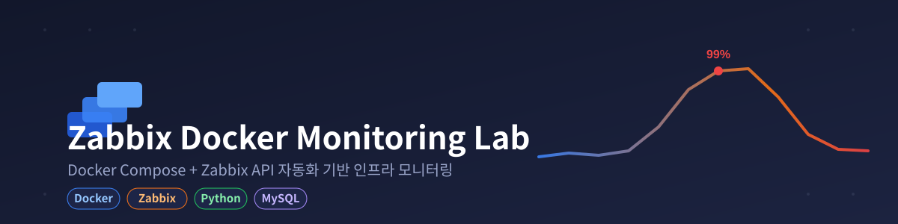

Selected Projects
FEATURED · Computer Vision
Industrial Defect Inspection
지도학습(YOLOv8)과 비지도학습(PatchCore)으로 같은 데이터를 비교해, 두 모델이 정확히 반대 지점에서 약하다는 걸 pixel 단위 분석으로 밝혀냈습니다.
비교 분석 자세히 보기PatchCore
0.993
F1 · 위치 특정은 약함 (IoU 0.032)
YOLOv8
0.714
F1 · crack 결함 recall 0.143

Seoul Population Dashboard
구별 인구 데이터를 수집·정제해 Power BI로 시각화. 데이터가 25개 구 중 13개만 포함된 상태에서 비율 계산이 틀어지지 않도록 설계한 것이 핵심.
자세히 보기
PLAN UP
채용 공고 URL을 넣으면 마감일을 자동으로 추출해 캘린더로 관리하는 취업준비생용 일정관리 앱. 크롤링 서버와 일정 기능을 담당.
자세히 보기
Medical Voice Charting
Whisper(STT) + 로컬 LLM으로 진료 구술을 SOAP 노트로 자동 정리. 의료 용어 오인식을 직접 확인하며 AI 출력 검증의 필요성을 배운 프로젝트.
자세히 보기
SmartDoc AI
로컬 LLM 기반 RAG 문서 검색 Agent. 검색 결과가 부족하면 스스로 판단해 질문을 재구성하고 재검색하는 자가교정 구조.
자세히 보기
Zabbix Docker Monitoring Lab
Docker Compose로 Zabbix 모니터링 스택을 구축하고, REST API로 호스트·템플릿 등록을 자동화. CPU 부하 테스트로 트리거·알림 동작까지 직접 검증.
자세히 보기More Projects: DoctorChat· BookHub· Motorshot· CelebMatch-AI